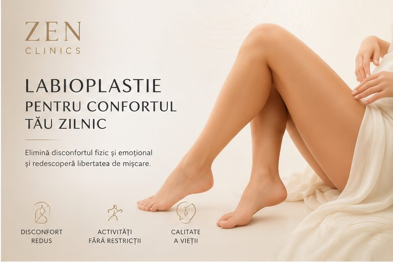

Confort fizic
Poate fi discutată atunci când există disconfort local, iritații sau dificultăți în activități cotidiene.

Zone intime
O intervenție intimă discutată discret, cu atenție la confort, funcționalitate, proporție și așteptări realiste.
Discret
Labioplastia este abordată într-un cadru medical privat, cu o discuție atentă despre confort, funcționalitate, sensibilitate și obiectivul pacientei.
Consultația stabilește dacă intervenția este potrivită, ce opțiuni există, care sunt limitele și cum arată pregătirea și recuperarea pentru cazul tău.
Cadru vizual


Potrivire
Indicația finală se stabilește în urma consultației. Punctele de mai jos sunt orientative și nu înlocuiesc evaluarea medicului.
Poate fi discutată atunci când există disconfort local, iritații sau dificultăți în activități cotidiene.
Se poate adresa unui obiectiv estetic intim, cu respect pentru proporții și naturalețe.
Recomandarea se stabilește doar după evaluarea anatomiei, istoricului medical și așteptărilor.
Experiență
Discuție despre obiective, istoric medical, disconfort, limite și opțiuni posibile.
Analiză personalizată a anatomiei, proporțiilor și contextului medical.
Recomandări clare, pași explicați și așteptări formulate prudent.
Intervenția și controalele ulterioare se desfășoară conform planului stabilit cu medicul.
Obiective
Fiecare obiectiv este discutat realist, în funcție de anatomie, indicație, tehnică și evoluția individuală.
Poate contribui la reducerea unor disconforturi locale, în funcție de caz.
Urmărește un rezultat discret și armonios, fără promisiuni absolute.
Planul este individual și se discută într-un cadru empatic, privat și medical.
Detalii importante
Durata, pregătirea, recuperarea, indicațiile și contraindicațiile se discută individual cu medicul.
Procedura se discută în funcție de anatomie, obiectiv, istoric medical, confort și recomandarea medicului.
Vei primi indicații clare despre pregătire, igienă, activitate fizică, reluarea vieții intime și controalele recomandate.
Riscurile, cicatrizarea, sensibilitatea și limitele rezultatului se explică înainte de orice decizie.
FAQ
Decizia se ia în urma unei consultații, după evaluarea anatomiei, istoricului medical și obiectivelor. Informațiile de pe pagină nu înlocuiesc recomandarea medicului.
Recuperarea diferă în funcție de tehnică și de fiecare pacientă. Medicul îți explică intervalele realiste și recomandările postoperatorii.
Rezultatele pot varia în funcție de anatomie, indicație, vindecare și respectarea recomandărilor medicale.
Se discută obiectivul estetic sau funcțional, opțiunile posibile, limitele procedurii, riscurile, recuperarea și pașii următori.
Consultație
Discută cu echipa ZEN Clinics despre opțiunile potrivite, limitele procedurii și pașii recomandați pentru cazul tău.
Programează o consultație